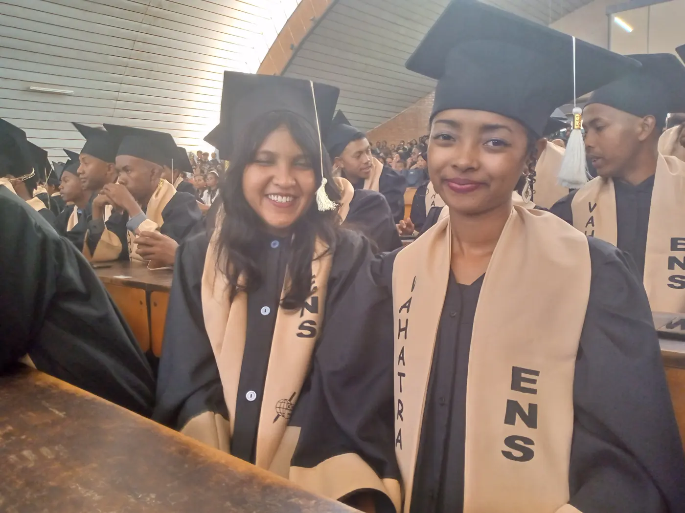
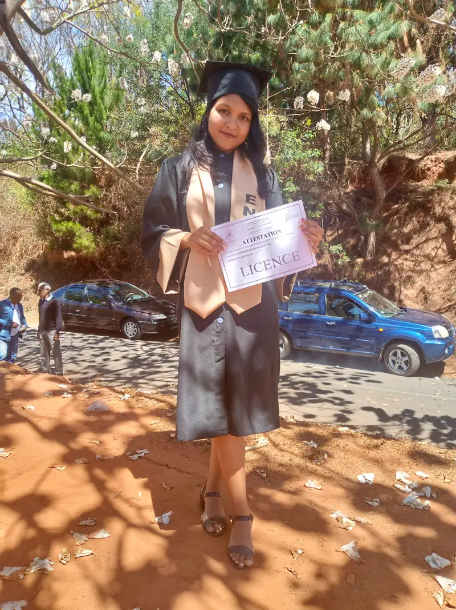
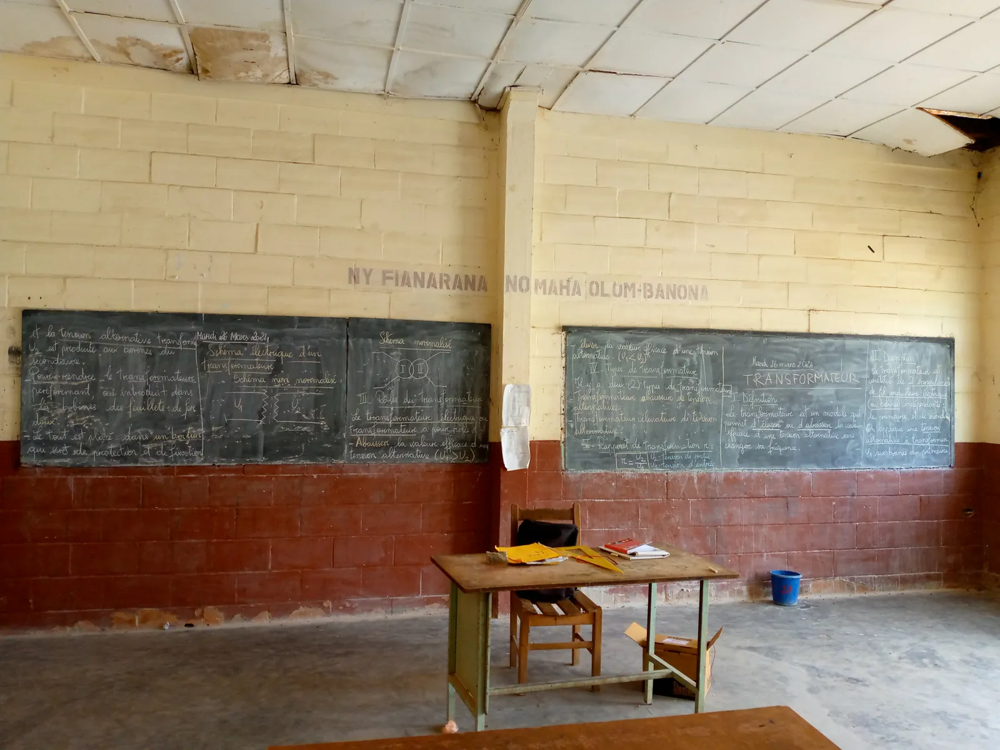
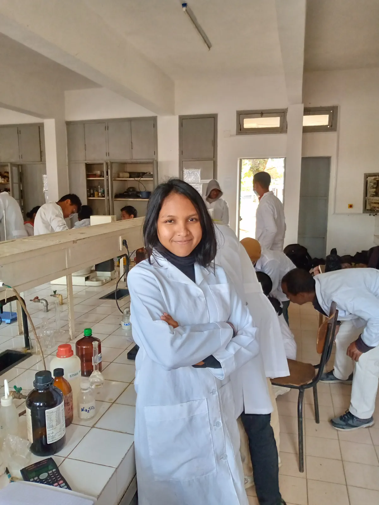
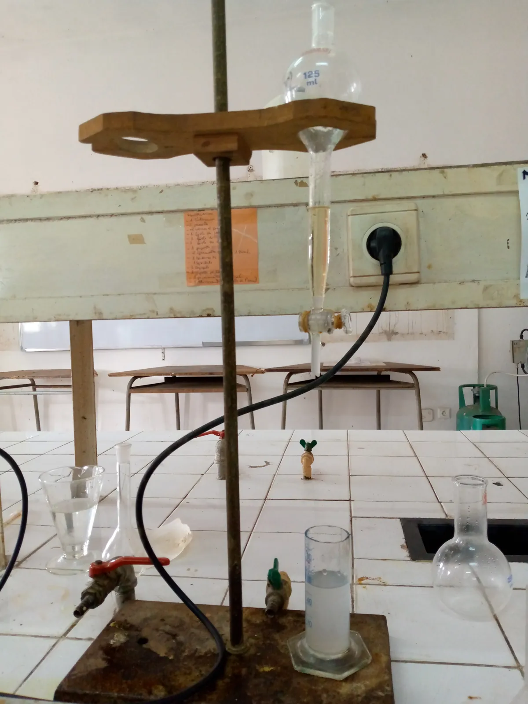
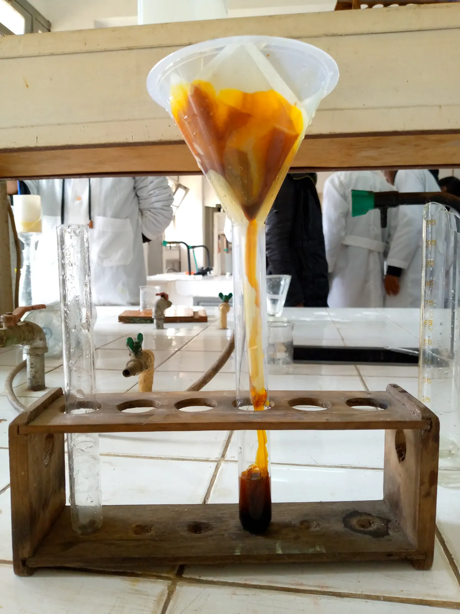
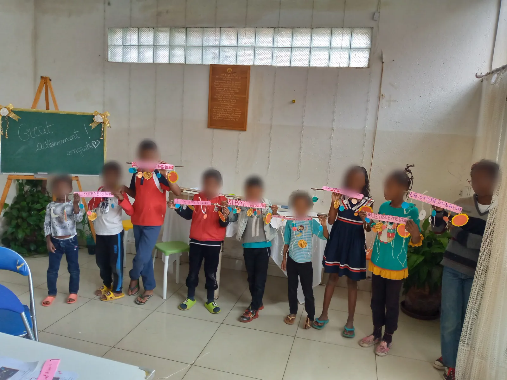
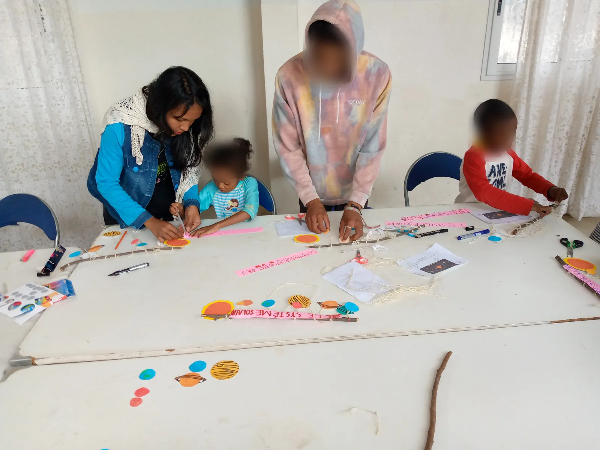

Partir du concret
Des expériences montées avec du matériel local et peu coûteux : la science ne doit pas dépendre d'un laboratoire bien équipé.
Voir en photos✦ Chapitre I
transmettre le savoir
Professeure de physique-chimie formée à l'École Normale Supérieure d'Antananarivo, je crois qu'une science bien racontée peut changer une trajectoire. Mon objectif : rendre la science vivante, concrète et accessible à tous.
14/20
Licence avec mention · ENS
30
Jeunes scouts à une conférence sur le Soleil
4 semaines
D'ateliers du samedi · 10 élèves · SPA & MASS
3
Langues · malgache · français · anglais
✦ Ma démarche
Trois principes, nés en classe et sur le terrain, guident ma façon de transmettre la science.
Des expériences montées avec du matériel local et peu coûteux : la science ne doit pas dépendre d'un laboratoire bien équipé.
Voir en photosPrésentations interactives et ateliers pratiques où les élèves questionnent, testent et observent par eux-mêmes.
Voir en photosPas seulement le résultat, mais chaque étape qui y mène : c'est l'esprit de Fonctio, ma plateforme d'étude de fonctions.
Voir en photos✦ Étapes
Aujourd'hui
Je conçois des outils numériques pour les élèves, comme Fonctio, et je relie la salle de classe, le ciel et l'entreprise.
Médiation
Association scientifique
En classe
Antananarivo, Madagascar
Enseignement de la physique-chimie auprès d'élèves du secondaire, avec un souci constant : rendre tangibles les notions abstraites.
2021 – 2024
École Normale Supérieure (ENS) · Antananarivo
Formation de professeure de physique-chimie, obtenue avec mention (14/20).
✦ 2021 – 2024 · ENS Antananarivo
Licence d'enseignement en physique-chimie, obtenue avec mention (14/20).
École Normale Supérieure, Université d'Antananarivo : la formation d'enseignante qui fonde tout ce que je transmets aujourd'hui.


✦ En classe
Un cours de physique sur le transformateur, le 26 mars 2024 : définition, description, schéma, rôles, types et rapport de transformation, construits pas à pas avec la classe.


✦ Travaux pratiques
Côté chimie : travaux pratiques de chimie organique, du montage à reflux à l'extraction et à la filtration. Manipuler, c'est comprendre.



✦ Médiation · SPA & MASS
Fabriquer son propre système solaire avec des bâtons, de la ficelle et du papier : la science avec ce qu'on a sous la main, avec Sciences Physiques et Avenir et la Malagasy Astronomical Society (MASS).


✦ En pratique
Plateforme d'étude de fonctions : on saisit f(x) et on obtient l'étude complète (domaine, dérivée, variations, tangente, courbe, primitive, aire), avec le raisonnement détaillé.
Présentation interactive sur la physique du Soleil pour 30 jeunes scouts, et ateliers du samedi (4 semaines, 10 élèves) avec la Malagasy Astronomical Society (MASS), à partir de matériel local et peu coûteux.
Cheffe d'une équipe de 4 : 2 astéroïdes candidats provisoires identifiés sur des images Pan-STARRS. Travail reconnu par le Pan-STARRS Institute (Université d'Hawaï), soutenu par la NASA.
✦ Poursuivre
Transmettre, chercher et créer : trois domaines qui se nourrissent l'un l'autre.